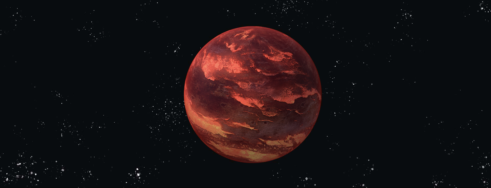

离开了太阳，我们来到太阳系之旅的第四站--金星。

金星｜VENUS
离开了太阳，我们来到太阳系之旅的第四站--金星。
金星在中国古代称为太白、明星或大嚣，早晨出现于东方
称启明，晚上出现于西方称长庚。
到西汉时期，《史记‧天官书》作者司马迁从实际观测发现
太白为白色，与“五行”学说联系在一起，正式把它命名
为金星。
英文名称源自罗马神话的爱与美的女神维纳斯（Venus），
古希腊人称为阿佛洛狄忒，也是希腊神话中爱与美的女神。
在太阳系中，金星像钻石一样散发着耀眼的光芒,分外夺目。
金星的 3D 模型，太阳系的闪耀钻石。
用鼠标拖动试试
Source: NASA Visualization Technology Applications and Development (VTAD)

质量：4.868×1024kg（地球质量的81.5%）
体积：9.284×1020m³（地球体积的86.6%）（地球体积的5.6%）
与太阳的平均距离：1.082×108km（日地距离的72.3%）
直径：12103.6km